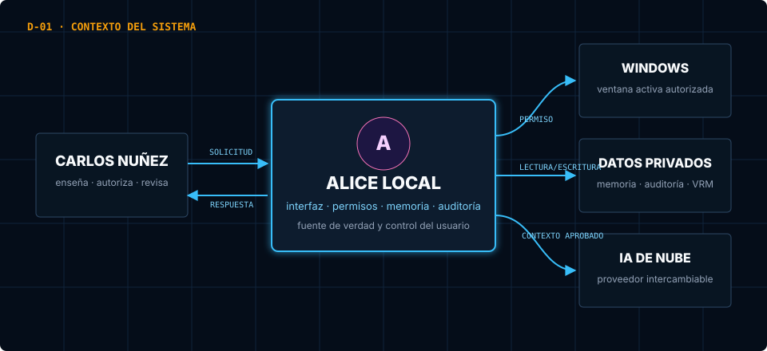
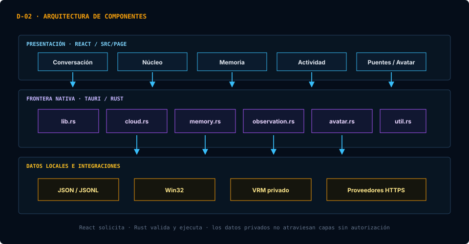
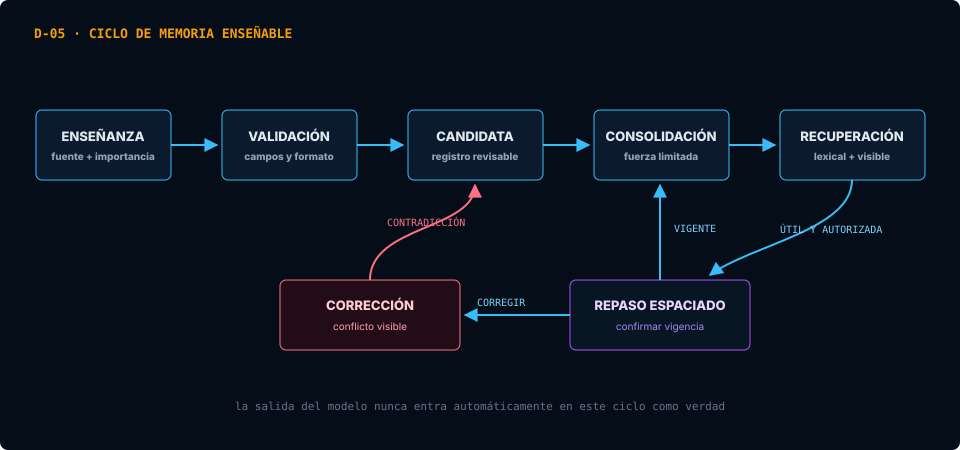
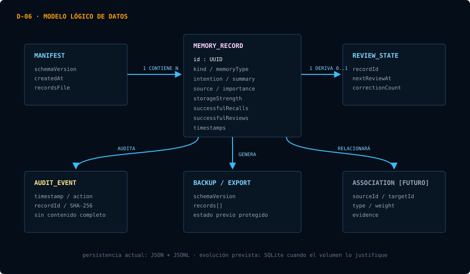
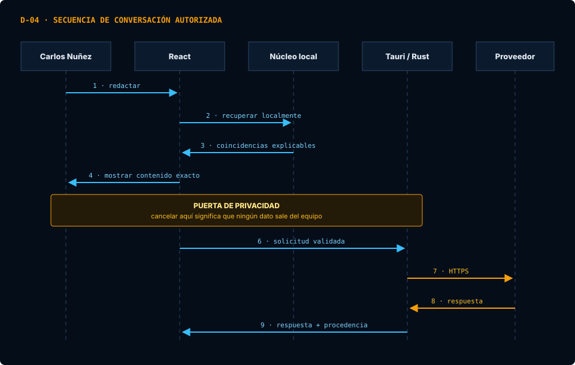
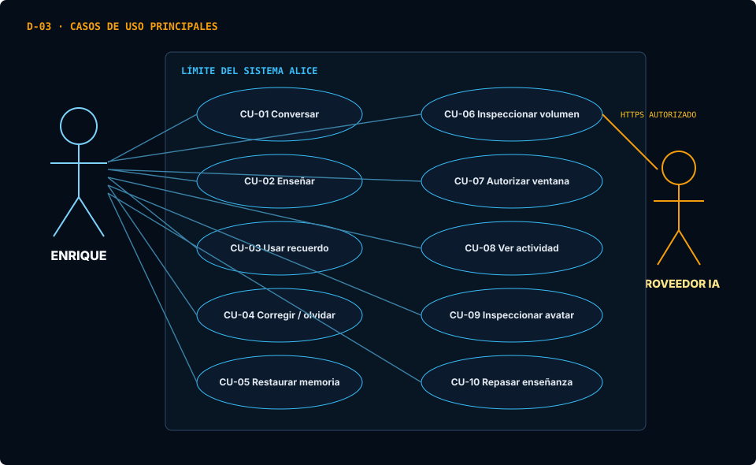

Mente, cuerpo y gobierno local aparecen como espacios separados; la sala de observación permanece futura.
CORE SYSTEM // AL-01ALICE
Núcleo cognitivoLocalObservable
Especificación de requisitos · Arquitectura · Operación · Calidad
Una presencia digital,
con límites reales.
Documento rector de una asistente personal local-first que observa únicamente con permiso, conserva memoria revisable, razona mediante modelos de nube intercambiables y mantiene cada capacidad bajo control del usuario.
Documento v0.34Producto v0.1.0PersonalLocal-firstWindows + Tauri
Índice general
La estructura adopta las prácticas documentales aplicadas en Skytech —portada, requisitos, casos, restricciones, anexos y trazabilidad—, pero mantiene contenido y lenguaje visual propios de Alice.
01Resumen y control documental02Propósito del producto
03Alcance, límites y supuestos04Relación con proyectos anteriores
05Actores y requisitos06Arquitectura del sistema
07Núcleo observable08Memoria y diccionario de datos
09IA de nube e integraciones10Pantallas y responsabilidades
11Casos de uso12Seguridad y privacidad
13Instalación y operación14Pruebas y calidad
15Solución de problemas16Roadmap
17Aceptación y trazabilidad18Decisiones de arquitectura
19Historia de cambios20Glosario y referencias
1. Resumen ejecutivo y estado
Alice es una aplicación de escritorio personal que combina interfaz local, memoria privada, un núcleo observable y modelos de lenguaje intercambiables. El objetivo no es entrenar un modelo frontera en esta notebook, sino construir una identidad funcional que aprende mediante recuerdos revisables y usa la nube como capacidad externa.
| Control del documento | Valor |
|---|---|
| Autor, propietario y usuario principal | Carlos Nuñez |
| Identidad técnica | Alice Cognitive Core · alice-cognitive-core |
| Repositorio | enri312/alice-cognitive-core · privado |
| Contexto académico | Estudiante de Ingeniería en Informática |
| Tipo | Especificación de requisitos, arquitectura, manual técnico y manual operativo |
| Versión documental | 0.34 · 10 de agosto de 2026 |
| Versión del producto | 0.1.0 · prototipo funcional |
| Clasificación | Proyecto personal · memoria y credenciales privadas excluidas del repositorio |
| Fuente de verdad | docs/alice_documento_maestro.html |
| Proyecto de referencia documental | E:\SKYTECH\documentacion_tecnica.html, consultado sin modificar |
| Política de cambio | Documentar decisión y aceptación, implementar, verificar y registrar mediante Git. |
Taller gobernado y primera habilidad de lectura validados; ejecución permanece desactivada.
React/TypeScript en interfaz y Rust en la frontera nativa.
| Capacidad | Estado | Evidencia |
|---|---|---|
| Conversación multiproveedor | Implementada | OpenRouter, OpenAI, Anthropic, Google, xAI y endpoint compatible. |
| Memoria local enseñable | En desarrollo | Creación, edición, borrado, respaldo, exportación, recuperación lexical y cola de repaso v1. |
| Registro de capacidades R1 | Implementado | Snapshot nativo v1 con 24 capacidades: catorce implementadas o parciales y diez planificadas sin adaptador. |
| Entradas sensoriales | Parcial | Cámara y micrófono con leases R2 reales; análisis, transcripción y memoria desconectados. |
| Grafo de asociaciones | Planificado | El contrato visual está definido; faltan aristas persistentes. |
| Voz, rostro y cuerpo | Planificado | Avatar visible con control DualSense y ensayo procedural; clips retargeteados, IK, voz, decisiones corporales y Active Ragdoll continúan desconectados. |
2. Propósito
Alice no es un chatbot suelto ni un sistema que pretenda ser consciente. Es un proyecto personal de Carlos Nuñez: una entidad digital con memoria, contexto, habilidades y una interfaz que permita entender por qué sabe algo, qué está usando y qué está a punto de hacer.
Inspiración, no copia. La referencia de Wichito aporta una visión: percepción → memoria → foco → planificación → expresión. Alice adoptará esa claridad visual y esa presencia gradual, no afirmaciones de conciencia ni autonomía oculta.
3. Alcance y límites
Sí será
Una app de escritorio para acompañar estudio, programación e investigación; con memoria visible, contexto autorizado, conversación y propuestas de ayuda.
No será todavía
Un servicio 24/7, un controlador libre del equipo, un sistema de vigilancia, ni una IA entrenada localmente a gran escala.
Regla no negociable. Alice no observa pantalla, micrófono, ventanas, archivos ni datos privados por defecto. Cada fuente de contexto tiene un interruptor visible, una descripción y una forma de detenerla.
Supuestos y restricciones de diseño
| Tipo | Decisión vigente | Consecuencia |
|---|---|---|
| Plataforma | Windows 10/11 es el primer objetivo. | La observación de ventana usa Win32; la interfaz y memoria deben conservar contratos portables. |
| Hardware | La notebook ejecuta interfaz, memoria y controles; el modelo frontera vive en la nube. | No se exige GPU dedicada ni se entrenan pesos de gran escala localmente. |
| Persistencia | JSON y JSONL durante el prototipo. | SQLite se adopta solo cuando el volumen requiera índices, transacciones o relaciones persistentes. |
| Datos iniciales | La distribución comienza sin memoria personal ni métricas simuladas. | Cada instalación construye su red a partir de enseñanzas y actividad autorizadas. |
| Acciones | Herramientas, cámara, micrófono, voz y control corporal de Alice permanecen desconectados. | La prueba DualSense es entrada humana directa del visor; cada adaptador futuro necesita contrato, indicador, revocación y prueba propios. |
| Avatar | El VRM es un activo privado y no forma parte del repositorio ni del instalador. | El visor resuelve una ruta local exacta y falla de manera explícita si el archivo no existe. |
4. Relación con el proyecto anterior
E:\Alice es una referencia histórica y permanecerá intacta. El relanzamiento iniciado en E:\Proyecto P adopta la identidad Alice Cognitive Core y migra por copia verificada a E:\Alice Cognitive Core. Ninguna clave, memoria privada o activo se publica durante el traslado.
| Activo existente | Decisión para Alice | Motivo |
|---|---|---|
| React + TypeScript + Vite | Reutilizar el enfoque | Ya permite crear una interfaz moderna y comprobable. |
| Tauri + Rust | Reutilizar | Permite integrar Windows con una frontera nativa pequeña y explícita. |
| Puerta de permisos, auditoría y previsualización | Recrear de forma mínima | Es la base para que Alice sea segura y explicable. |
| Avatar, voz, VRM y audio | Posponer | La presencia llega después de demostrar memoria, contexto y seguridad. |
| Azyreth, datasets y LoRA/QLoRA | No importar aún | La IA primaria será de nube; no se entrenarán pesos en esta notebook. |
| Windows Sandbox | No depender | El entorno no es confiable para el uso actual de Carlos Nuñez. |
5. Requisitos del sistema
Actores
| Actor | Responsabilidad | Límite |
|---|---|---|
| Carlos Nuñez | Enseña, revisa, autoriza contexto y decide qué acciones pueden realizarse. | Es el único usuario y autoridad de la versión personal. |
| Alice local | Coordina interfaz, memoria, recuperación, auditoría y permisos. | No se describe como persona consciente ni actúa fuera de las capacidades habilitadas. |
| Proveedor de IA | Genera una respuesta temporal a partir del contenido autorizado. | No es la identidad ni la memoria persistente de Alice. |
| Adaptador futuro | Conecta voz, rostro, cuerpo, archivos u otra herramienta concreta. | Permanece desconectado hasta tener contrato, indicador y revocación visibles. |
Requisitos funcionales
| ID | Requisito | Estado |
|---|---|---|
| RF-01 | Conversar con un proveedor elegido y un modelo editable. | Implementado |
| RF-02 | Previsualizar exactamente qué contexto saldrá del equipo. | Implementado |
| RF-03 | Crear, editar, eliminar, exportar y restaurar recuerdos locales. | Implementado |
| RF-04 | Enseñar un concepto indicando tipo, fuente e importancia. | Implementado v1 |
| RF-05 | Recuperar recuerdos relevantes para una consulta. | Lexical v1 |
| RF-06 | Reforzar memoria mediante recuperación espaciada. | Repaso y uso autorizado v1 |
| RF-07 | Visualizar nodos y asociaciones respaldados por datos reales. | Parcial |
| RF-08 | Proponer acciones y ejecutarlas solo con aprobación. | Planificado |
| RF-09 | Inspeccionar el volumen mediante giro, desplazamiento, zoom y restablecimiento. | Implementado |
| RF-10 | Cargar e inspeccionar el avatar VRM local sin activar cámara, voz ni movimiento corporal. | Implementado visor v1 |
| RF-11 | Facilitar enseñanzas iniciales sin precargar ni inferir datos personales. | Implementado · 6 guías |
| RF-12 | Inventariar capacidades reales y planificadas mediante un contrato nativo, versionado y de solo lectura. | Implementado R1 |
Requisitos no funcionales
| ID | Atributo | Criterio verificable |
|---|---|---|
| RNF-01 | Seguridad de credenciales | Las claves permanecen fuera de React, memoria, auditoría y repositorio; solo Rust lee variables de entorno. |
| RNF-02 | Recuperabilidad | Cada sustitución de memoria conserva un respaldo y toda restauración protege primero el estado desplazado. |
| RNF-03 | Portabilidad de datos | Los recuerdos pueden exportarse en JSON legible, versionado y documentado. |
| RNF-04 | Usabilidad | Las funciones principales se distribuyen por pestañas y operan en una pantalla convencional desde 720 píxeles. |
| RNF-05 | Honestidad de interfaz | Los estados vacíos no inventan datos, emociones, conexiones, latencias ni confianza. |
| RNF-06 | Trazabilidad | Cada indicador persistente puede relacionarse con un recuerdo, evento, permiso o adaptador real. |
| RNF-07 | Compatibilidad | El arranque y las funciones locales operan en Windows 10 u 11 mediante Tauri y WebView2. |
| RNF-08 | Mantenibilidad | El backend separa Avatar, Nube, Memoria, Observación y Utilidades; lib.rs permanece como orquestador. |
| RNF-09 | Calidad verificable | Todo cambio debe aprobar pruebas TypeScript y Rust, formato, clippy -D warnings y compilación. |
| RNF-10 | Rendimiento local | La navegación y memoria básica no requieren red; el avatar se carga como módulo diferido y los adaptadores futuros empiezan apagados. |
| RNF-11 | Accesibilidad | Botones poseen etiquetas o tooltips, el movimiento respeta prefers-reduced-motion y las vistas interactivas ofrecen teclado. |
| RNF-12 | Minimización de datos | Auditorías guardan metadatos y huellas, no claves ni el contenido completo de consultas, respuestas o recuerdos. |
| RNF-13 | Diagnóstico pasivo | Consultar disponibilidad o salud no crea archivos, no migra memoria, no lanza procesos y no usa la red. |
6. Arquitectura del sistema
La aplicación separa presentación, coordinación, frontera nativa, memoria y proveedores externos. Esta separación permite reemplazar un modelo sin trasladar la identidad ni los recuerdos de Alice.
Diagrama de contexto


Diagrama de componentes


React + PagePantallas, revisión de contexto y visualización del núcleo.
→
Tauri + RustCredenciales, archivos privados, Windows, auditoría y llamadas HTTPS.
→
Servicios externosOpenRouter u otro proveedor; reciben solamente el contexto autorizado.
Alice |-- src/Page/ pantallas principales |-- src/components/ visualizaciones y controles reutilizables |-- src/core/ reglas cognitivas y recuperación local |-- src-tauri/src/ módulos nativos y orquestador Tauri |-- icons/ SVG empaquetados |-- docs/ manual, arquitectura, decisiones y runbooks `-- artifacts/ capturas de validación visual
Descomposición del backend nativo
lib.rsConfigura Tauri, administra estados, registra el inicio auditado y expone comandos nativos.
audit.rsValida el sobre R3, limita y rota JSONL y ofrece una lectura nativa sin contenido privado.
core_activity.rsDeriva señal efímera, regiones y enlaces desde eventos R3 recientes mediante una heurística explícita y de solo lectura.
skills.rsValida y conserva habilidades R4; ciclo, simulación y plantillas permanecen separados y sin ejecución.
procedure_learning.rsValida candidatos R5 y detecta secuencias repetidas desde R1/R3; no persiste, crea habilidades ni ejecuta procedimientos.
cloud.rsRegistra proveedores, valida solicitudes, traduce protocolos HTTPS y audita metadatos.
memory.rsValida recuerdos, persiste JSON, respalda, exporta, restaura y escribe auditoría local.
observation.rsEncapsula el estado de permiso, obtiene la ventana activa mediante Win32 e inicia el worker.
avatar.rsResuelve y valida la ruta privada del VRM sin modificar el modelo.
util.rsCentraliza la raíz de datos y el tiempo usado por auditorías y exportaciones.
Contratos entre capas
| Componente | Responsabilidad | No debe hacer |
|---|---|---|
| Interfaz React | Mostrar estado y solicitar decisiones. | Leer claves o escribir directamente en archivos privados. |
| Núcleo local | Calcular señales explicables desde datos reales. | Afirmar conciencia o inventar métricas. |
| Tauri/Rust | Aplicar límites, persistir y traducir APIs. | Ejecutar herramientas fuera del contrato autorizado. |
| Modelo de nube | Generar lenguaje y razonamiento temporal. | Convertirse automáticamente en memoria o fuente de verdad. |
7. Núcleo observable
El Núcleo es la sala de observación del proceso cognitivo de Alice. No representa un cerebro biológico ni muestra “neuronas” ficticias: cada etapa expone entradas, memoria, contexto de trabajo, planificación y salidas respaldadas por datos reales.
[07] COGNITIVE PIPELINERuta observable de una decisión
Datos reales únicamente01Percepción
Recibe solamente las fuentes habilitadas.
- Conversacióndisponible
- Ventana activacon permiso
- Captura manualdisponible
02Memoria
Recupera evidencia local inspeccionable.
- Registros localesactivo
- Búsqueda lexicalv1
- Cola de repasov1
03Workspace
Compone el contexto temporal autorizado.
- Objetivo actualpor evento
- Contexto aprobadovisible
- Traza de sesióntemporal
04Planificador
Prepara una respuesta, nunca una acción oculta.
- Respuesta propuestalocal/nube
- Riesgo y utilidadsin calcular
- Aprobaciónobligatoria
05Salida
Publica solo por puentes disponibles.
- Textodisponible
- Voz y rostrodesconectados
- Cuerpo / Ragdollfuturo
Desarrollo de la red propia
El modelo de nube aporta lenguaje y razonamiento durante una solicitud, pero su conocimiento no se convierte automáticamente en conocimiento de Alice. El volumen neuronal representa únicamente la red local: recuerdos autorizados, asociaciones aprendidas y recuperación de esos recuerdos. Una consulta puede producir un pulso temporal; solo la memoria persistente puede aumentar la densidad duradera.
| Capa | Qué representa | Efecto visual |
|---|---|---|
| Modelo de nube | Capacidad externa y reemplazable para generar una respuesta. | Actividad temporal; no hace crecer la red. |
| Memoria de Alice | Experiencias guardadas con autorización y luego recuperables. | Nuevos puntos y conexiones persistentes. |
| Asociaciones futuras | Relaciones verificables entre temas, personas, tareas y resultados. | Refuerzan o debilitan enlaces con una razón inspeccionable. |
| Estado emocional futuro | Señales calculadas desde evidencia, no sentimientos ni conciencia. | Color y activación temporal con origen auditable. |
Paleta emocional de Alice
La asociación cromática se inspira en la lectura visual de Intensamente 2, pero usa tonos propios y no copia personajes ni recursos gráficos: Alegría amarilla, Tristeza azul, Ira roja, Temor violeta, Desagrado verde, Ansiedad naranja, Envidia turquesa, Aburrimiento índigo, Vergüenza rosa y Nostalgia gris rosado. La estructura tenue muestra solo circuitos respaldados por aprendizaje local; brillo y pulso significan actividad temporal. Los diez canales permanecen en 0.00 hasta existir un cálculo documentado y auditable.
Cómo aprenderá y recordará Alice
Alice usará una analogía funcional con la memoria, no una simulación biológica literal. Un nodo representa una unidad comprensible —recuerdo episódico, concepto semántico, procedimiento o preferencia— y las aristas representan asociaciones justificables. Enseñar no equivale a copiar toda una conversación: el contenido se divide, se identifica su fuente, se revisa y recién entonces puede consolidarse.
| Propiedad visual | Significado en Alice | Regla |
|---|---|---|
| Tamaño del nodo | Fuerza de almacenamiento o consolidación. | Aumenta gradualmente con confirmaciones y recuperaciones exitosas espaciadas; no por repetir muchas veces en el mismo instante. |
| Brillo y pulso | Activación y accesibilidad durante la tarea actual. | Sube al recuperar el recuerdo y vuelve a bajar sin eliminarlo. |
| Grosor de la arista | Fuerza de asociación entre dos recuerdos o conceptos. | Se refuerza cuando ambos resultan útiles juntos y conserva el motivo de la relación. |
| Opacidad | Accesibilidad estimada con el paso del tiempo. | Puede disminuir por falta de uso; una recuperación correcta la restaura. |
| Anillo exterior | Importancia marcada por Carlos Nuñez y calidad de la fuente. | No se confunde importancia personal con certeza factual. |
| Color | Tipo de memoria o señal emocional calculada. | La emoción será una capa temporal; no reemplaza el contenido del recuerdo. |
El ciclo previsto será: enseñanza → memoria candidata → revisión → consolidación → recuperación espaciada → refuerzo o corrección. Alice podrá proponer automáticamente qué conviene aprender, pero no convertirá una respuesta del modelo en un hecho permanente sin procedencia y control. Si dos enseñanzas se contradicen, conservará ambas versiones como conflicto visible hasta resolverlo.
Base consultada: la literatura sobre engramas distingue codificación, consolidación, almacenamiento y recuperación; la conectividad y la fuerza sináptica cumplen papeles diferentes. La práctica de recuperación y el espaciamiento mejoran la retención a largo plazo. Referencias: mecanismos del engrama, persistencia y conectividad, efecto de recuperación y efecto del espaciamiento.
| Capa | Responsabilidad | Estado inicial |
|---|---|---|
| Percepción | Recibir contexto explícitamente autorizado. | Captura manual y ventana activa ya prototipadas. |
| Memoria | Guardar enseñanzas, experiencias, decisiones y preferencias editables. | Carpeta privada memory/ con records.json, manifiesto, respaldos, exportaciones y auditoría JSONL con SHA-256. |
| Razonamiento | Construir una respuesta usando solo el contexto aprobado. | Capa multiproveedor implementada; requiere una clave local válida y autorización por consulta. |
| Planificador | Proponer el siguiente paso y explicar su evidencia. | Resumen local por reglas disponible. |
| Habilidades | Preparar acciones pequeñas, previsualizadas y revocables. | Bloqueadas hasta una fase posterior. |
| Capacidades y puentes | Consultar el registro nativo y traducir futuras decisiones aprobadas a texto, voz, rostro, mirada, cuerpo o adaptadores externos. | Snapshot pasivo disponible; todos los adaptadores externos comienzan desconectados y sin datos simulados. |
| Avatar local | Renderizar e inspeccionar el VRM creado por Carlos Nuñez sin alterar el archivo. | Visor, control DualSense y ensayo procedural local implementados; el VRM posee 54 huesos pero cero clips. Retargeting, IK, cámara, voz, expresiones cognitivas y Ragdoll permanecen desconectados. |
8. Memoria y diccionario de datos
La memoria se guarda en un directorio privado excluido del repositorio. La pantalla Memoria muestra la ruta exacta y permite abrirla.
Ubicación activa en el disco E:. El iniciador resuelve
ALICE_DATA_DIR=E:\Alice Cognitive Core\data; por ello la memoria vive en data\memory y la auditoría de nube en data\cloud. Las rutas históricas de E:\Proyecto P\data y AppData se conservan temporalmente como respaldo de migración. El contenido de data/ está excluido de Git para no compartir recuerdos personales.Ciclo de aprendizaje local


memory/ |-- manifest.json |-- records.json |-- backups/records.backup.json |-- exports/alice-memory-*.json |-- audit/memory-events.jsonl |-- attachments/ `-- indexes/
Modelo lógico de datos


| Campo de registro | Tipo | Descripción |
|---|---|---|
id | UUID | Identificador estable del recuerdo. |
kind | Texto controlado | Enseñanza, conversación u otra clase de experiencia. |
memoryType | Enum | Semántica, procedimental, preferencia o episódica. |
intention | Texto | Título o tema principal recuperable. |
summary | Texto | Contenido enseñado o resumen del episodio. |
source | Texto | Persona, documento o procedencia declarada. |
importance | 1–5 | Prioridad personal indicada por Carlos Nuñez. |
storageStrength | 0–1 | Heurística de consolidación; no representa certeza factual. |
successfulRecalls | Entero | Usos autorizados en conversaciones respondidas correctamente. |
lastRecalledAt | ISO-8601 | Último uso conversacional comprobado. |
successfulReviews | Entero | Confirmaciones manuales de vigencia. |
correctionCount | Entero | Revisiones que solicitaron una corrección. |
lastReviewedAt | ISO-8601 | Último repaso manual. |
Elección de formato. JSON y JSONL son adecuados durante el prototipo por ser portables e inspeccionables. SQLite será la evolución cuando el grafo, las revisiones y el volumen requieran índices y transacciones. Los detalles operativos viven en
docs/architecture/MEMORY_SYSTEM.md.9. IA en la nube e integraciones
La notebook de Carlos Nuñez será el hogar de Alice, su interfaz, memoria local y controles. El modelo de lenguaje se consumirá desde la nube mediante una capa intercambiable de proveedor. No se asume un único modelo ni se entrenará un modelo pesado en el equipo actual.
Secuencia de una conversación autorizada


Antes de cada llamada
Mostrar proveedor/modelo, datos que saldrán, propósito, límite de costo y un botón de autorización. El contexto privado se resume o excluye por defecto.
Después de cada llamada
Guardar localmente fecha, propósito, costo estimado y resultado aprobado; no conservar secretos ni audio/pantalla crudos en el registro.
Contrato de conversación inicial
| Elemento | Decisión | Límite |
|---|---|---|
| Entrada principal | Conversación directa con Alice. | Se elimina la obligación de iniciar una misión o elegir una categoría. |
| Transporte | Capa de proveedores desde el proceso nativo de Tauri. | React nunca recibe ni almacena claves. Cada adaptador conserva el contrato real de su API. |
| Credenciales | Variables de entorno independientes para cada proveedor. | No se escriben en el repositorio, memoria ni auditoría. |
| Previsualización | Mostrar el contenido exacto autorizado antes de enviarlo. | Historial y recuerdos locales quedan excluidos por defecto. |
| Persistencia remota | Usar store: false cuando la API lo admite y mostrar el modo aplicable. | La política de retención de cada proveedor sigue aplicando; no se promete invisibilidad absoluta. |
| Memoria local | Guardar un intercambio solo mediante un control visible. | El recuerdo continúa siendo editable, exportable y eliminable. |
| Modelos | Identificador editable por proveedor. | Los modelos frontera cambian con el tiempo; Alice no debe exigir modificar su interfaz para adoptar uno nuevo. |
10. Pantallas del producto
| Espacio | Pantallas | Responsabilidad |
|---|---|---|
| Cognitive Core | Conversación, Núcleo, Identificación, Memoria y Actividad | Percepción interpretada, recuerdos, estado, planificación, flujo y eventos de conducta. |
| Body Solver | Rostro, Cuerpo y Avatar | Expresión y presencia física; adaptadores todavía desconectados. |
| Governance Core | Capacidades y permisos, Auditoría y diagnóstico, Taller y Configuración | Control externo del propietario; no representa pensamiento o aprendizaje autónomo. |
| Observation Room | Futura | Sesiones delimitadas para estímulos, conducta y maduración trazable. |
Regla de diseño. Alice usa pestañas en vez de un grid gigante porque el equipo principal tiene un monitor convencional. Cada pestaña debe conservar profundidad técnica sin exigir múltiples monitores.
11. Casos de uso principales


CU-01 · Conversar con Alice
| Actor | Carlos Nuñez; proveedor de IA como actor externo |
|---|---|
| Precondición | Alice está iniciada y existe al menos un proveedor disponible. |
| Flujo principal | 1. Carlos Nuñez redacta el mensaje. 2. Elige proveedor y modelo. 3. Decide si incluye historial o memoria. 4. Abre Ver qué se enviará. 5. Autoriza. 6. Alice presenta respuesta, proveedor y modelo real. |
| Alternativas | Sin clave o con error de red, no se borra el borrador y se muestra una causa accionable. Cancelar la revisión no envía datos. |
| Postcondición | Existe un evento local de actividad; la respuesta no se convierte automáticamente en recuerdo. |
| Requisitos | RF-01, RF-02, RNF-01, RNF-05 |
CU-02 · Enseñar un conocimiento
| Actor | Carlos Nuñez |
|---|---|
| Precondición | La carpeta de memoria local está disponible. |
| Flujo principal | 1. Indica tema, tipo, contenido, fuente e importancia. 2. Revisa el contenido. 3. Guarda. 4. Alice persiste el registro con consolidación inicial baja. |
| Alternativas | Si faltan campos obligatorios o falla la escritura, Alice conserva el formulario y no crea un recuerdo parcial. |
| Postcondición | El recuerdo queda visible, editable, exportable y auditable; no se llama a la nube. |
| Requisitos | RF-03, RF-04, RNF-02, RNF-03 |
CU-03 · Usar un recuerdo en una respuesta
| Actor | Carlos Nuñez y Alice local |
|---|---|
| Precondición | Hay recuerdos guardados y existe una consulta redactada. |
| Flujo principal | 1. La búsqueda lexical propone hasta tres coincidencias. 2. Alice muestra puntuación, coincidencias y contenido. 3. Carlos Nuñez elige si las adjunta. 4. La previsualización vuelve a mostrar el texto exacto antes del envío. |
| Alternativas | Si no hay coincidencias, la consulta continúa sin memoria; Alice no inventa contexto. |
| Postcondición | Solo los recuerdos autorizados forman parte de esa solicitud. |
| Requisitos | RF-02, RF-05, RNF-05, RNF-06 |
CU-04 · Corregir u olvidar
| Actor | Carlos Nuñez |
|---|---|
| Precondición | Existe un recuerdo seleccionado. |
| Flujo principal | 1. Carlos Nuñez edita o elimina. 2. Alice crea el respaldo anterior. 3. Valida y escribe el nuevo estado. 4. Registra el tipo de operación sin copiar el texto completo en auditoría. |
| Alternativas | Un fallo de validación conserva el archivo vigente y presenta el error. |
| Postcondición | La fuente de verdad refleja la decisión del usuario y conserva una vía de recuperación. |
| Requisitos | RF-03, RNF-02, RNF-06 |
CU-05 · Recuperarse de un error
| Actor | Carlos Nuñez |
|---|---|
| Precondición | Existe un respaldo o una exportación válida. |
| Flujo principal | 1. Carlos Nuñez selecciona restaurar. 2. Alice valida el archivo. 3. Protege el estado actual en backups/records.pre-restore.json. 4. Restaura. 5. Informa el resultado. |
| Alternativas | Un JSON inválido o incompatible se rechaza sin reemplazar la memoria vigente. |
| Postcondición | La memoria vuelve a un estado válido y la operación queda auditada. |
| Requisitos | RF-03, RNF-02, RNF-03 |
CU-06 · Inspeccionar el volumen neuronal
| Actor | Carlos Nuñez |
|---|---|
| Precondición | Existe actividad local y el Núcleo muestra el volumen. |
| Flujo principal | 1. Carlos Nuñez elige Girar o Mover. 2. Arrastra el lienzo. 3. Usa rueda o botones para cambiar el zoom. 4. Inspecciona los hemisferios. 5. Restablece la vista. |
| Alternativas | Teclado: flechas para girar, Shift + flechas para mover, +/− para zoom y 0 para restablecer. |
| Postcondición | Solo cambia la cámara; memoria, métricas y asociaciones permanecen intactas. |
| Requisitos | RF-07, RF-09, RNF-04, RNF-05 |
CU-07 · Autorizar observación de ventana
| Actor | Carlos Nuñez y Alice local |
|---|---|
| Precondición | La aplicación de escritorio está ejecutándose en Windows. |
| Flujo principal | 1. Carlos Nuñez activa el interruptor visible. 2. Alice consulta cada dos segundos título y nombre del proceso activo. 3. Ignora su propia ventana. 4. Muestra el último contexto disponible. 5. Carlos Nuñez decide si lo incluye en una consulta. |
| Alternativas | Si Windows no entrega una ventana válida, Alice conserva el estado sin inventar contexto. |
| Postcondición | Al desactivar el permiso se elimina inmediatamente el último contexto mantenido en memoria. |
| Requisitos | RF-02, RNF-01, RNF-05, RNF-12 |
CU-08 · Inspeccionar actividad cognitiva
| Actor | Carlos Nuñez |
|---|---|
| Precondición | La sesión actual generó entradas, recuperaciones, llamadas, salidas o controles. |
| Flujo principal | 1. Carlos Nuñez abre Actividad. 2. Revisa secuencia, módulo, nivel y resumen. 3. Comprueba si hubo llamada externa o bloqueo. 4. Puede limpiar solamente la línea temporal de la sesión. |
| Alternativas | Sin eventos, la pantalla muestra un estado vacío real. |
| Postcondición | La inspección no modifica memoria persistente ni auditorías nativas. |
| Requisitos | RNF-05, RNF-06 |
CU-09 · Inspeccionar el avatar local
| Actor | Carlos Nuñez |
|---|---|
| Precondición | Existe un archivo VRM privado válido en la ruta configurada. |
| Flujo principal | 1. Alice valida extensión y disponibilidad. 2. Carga el visor de forma diferida. 3. Carlos Nuñez gira, desplaza o amplía la cámara. 4. Revisa metadatos y límites de esta fase. |
| Alternativas | Si falta o es inválido, se informa la ruta esperada sin copiar ni publicar el archivo. |
| Postcondición | El VRM permanece intacto; voz, cámara, expresiones dirigidas y Ragdoll siguen desconectados. |
| Requisitos | RF-10, RNF-01, RNF-10 |
CU-10 · Repasar una enseñanza
| Actor | Carlos Nuñez y Alice local |
|---|---|
| Precondición | Existe una enseñanza incluida en la cola local de repaso. |
| Flujo principal | 1. Alice muestra la enseñanza y su procedencia. 2. Carlos Nuñez confirma vigencia o solicita corrección. 3. El sistema actualiza contadores separados de repaso. 4. Recalcula la próxima fecha con límites documentados. |
| Alternativas | Una contradicción se marca como conflicto; no se resuelve mediante una respuesta automática de nube. |
| Postcondición | La consolidación cambia de forma explicable y el registro continúa editable. |
| Requisitos | RF-03, RF-06, RNF-02, RNF-05, RNF-06 |
12. Seguridad, privacidad y límites
| Riesgo | Control vigente | Mejora futura |
|---|---|---|
| Filtración de claves | Variables de entorno; React nunca las recibe. | Almacén seguro del sistema operativo. |
| Envío accidental de contexto | Contexto excluido por defecto y previsualización obligatoria. | Perfiles de privacidad por tarea. |
| Corrupción de memoria | Archivo temporal, respaldo previo, exportación y SHA-256. | SQLite con transacciones e integridad referencial. |
| Aprendizaje de información falsa | Fuente visible y enseñanza confirmada por Carlos Nuñez. | Conflictos, verificación y reputación de fuentes. |
| Autonomía excesiva | Sin herramientas; acciones bloqueadas. | Capacidades individuales, revocables y previsualizadas. |
| Datos personales al compartir | La memoria vive fuera del repositorio. | Asistente de limpieza y paquete de distribución. |
No confundir local con cifrado. Los archivos están fuera del repositorio y bajo el perfil de Windows, pero todavía no poseen cifrado propio de Alice. No deben almacenarse secretos, contraseñas ni claves de API como recuerdos.
13. Instalación y operación
Requisitos actuales
- Windows 10 u 11.
- Node.js y npm para desarrollo.
- Rust/Cargo y WebView2 para Tauri.
- Al menos una API key si se desea conversación de nube.
Arranque recomendado
1. Ejecutar: Iniciar Alice.cmd 2. Esperar la ventana de Tauri 3. Verificar proveedor LISTO 4. Abrir Memoria y confirmar ARCHIVO LOCAL 5. Enseñar o conversar
Las claves se leen al arrancar. Después de cambiar una variable de entorno debe reiniciarse Alice. El procedimiento detallado vive en docs/runbooks/01-arranque-local.md.
14. Estrategia de pruebas y calidad
Última ejecución completa: 09 de agosto de 2026. R1, R2 y los cinco incrementos de R3 comprobados, 100 pruebas Rust normales y 79 TypeScript, sondas vivas separadas,
clippy sin advertencias, compilaciones aprobadas y datos privados preservados.| Nivel | Comando o evidencia | Criterio |
|---|---|---|
| Unidades frontend | npm test | Las 28 pruebas de estado cerebral, contexto, memoria y repaso pasan sin red. |
| Compilación frontend | npm run build | TypeScript y Vite terminan sin errores. |
| Unidades backend | cargo test --manifest-path src-tauri/Cargo.toml | Las 14 pruebas de contratos, memoria, avatar, observación y formatos multiproveedor pasan. |
| Análisis Rust | cargo clippy --manifest-path src-tauri/Cargo.toml -- -D warnings | Ninguna advertencia es aceptada. |
| Formato Rust | cargo fmt --manifest-path src-tauri/Cargo.toml -- --check | No existen diferencias de formato. |
| Compilación nativa | cargo build --manifest-path src-tauri/Cargo.toml | El backend completo enlaza correctamente. |
| Documentación | Validación de HTML, enlaces internos y git diff --cached --check | Sin identificadores duplicados, destinos ausentes ni errores de parche. |
| Visual | Capturas en artifacts/ | Portada, índice, tablas, navegación y modo de impresión son legibles. |
Criterios de prueba de memoria
- Una instalación nueva crea la estructura vacía sin incluir datos del repositorio.
- Un
sessions.jsonanterior se copia y continúa legible. - Guardar crea o actualiza
records.jsony conserva respaldo. - La auditoría agrega eventos sin contener el texto completo del recuerdo.
- Restaurar conserva primero el estado desplazado.
- La cola de repaso acepta enseñanzas directas, excluye conversaciones y deriva fechas sin red.
- Confirmar o solicitar corrección modifica solamente métricas auditables del registro seleccionado.
Puerta de entrega
Un cambio solo se considera terminado cuando actualiza documentación y decisión si corresponde, aprueba las puertas automáticas, conserva los datos privados fuera de Git y registra un commit descriptivo. Una captura aislada no sustituye una prueba funcional.
15. Solución de problemas
OpenRouter aparece SIN CLAVE
Confirmar que OPENROUTER_API_KEY existe en las variables del usuario y reiniciar Alice. Nunca pegar la clave en el proyecto.
La memoria indica ERROR
Usar la ruta mostrada, copiar la carpeta completa y revisar que records.json sea JSON válido. Consultar docs/runbooks/02-operar-memoria.md.
No aparece una enseñanza en la conversación
Escribir primero un mensaje relacionado. La recuperación v1 es lexical y necesita palabras coincidentes. Luego activar explícitamente Recuerdos relevantes.
Los cambios nativos no aparecen
Cerrar y reiniciar Alice. Vite actualiza la interfaz, pero cambios de Rust requieren recompilar o reiniciar el proceso Tauri.
El volumen parece demasiado lleno
Revisar los indicadores RED PROPIA y ACTIVA. La primera depende de memoria persistente; la segunda incluye pulsos temporales.
16. Roadmap de materialización
Fase 0 — Contrato Completa
Documento inicial, inventario del proyecto anterior y límites de seguridad.
Fase 1 — Núcleo visible Base completa
Control Room, volumen, flujo, estado, planificador, actividad y puentes por pestañas.
Fase 2 — Memoria enseñable En curso
Carpeta v1 con manifiesto, registros, respaldos, exportaciones, auditoría, seis guías de enseñanza directa y recuperación lexical explicable.
Fase 3 — Conversación de nube Funcional
OpenRouter y adaptadores intercambiables, modelo editable, previsualización y autorización explícita.
Fase 4 — Consolidación y repaso En curso
Cola local con intervalos explicables, repaso manual y refuerzo por recuperación conversacional autorizada. Falta detectar contradicciones y proponer nuevas enseñanzas para aprobación.
Fase R1 — Registro de capacidades Completa
Snapshot nativo pasivo, validación Rust/TypeScript y vista agrupada por dominio implementados sin conceder permisos nuevos.
Fase R2 — Gateway de permisos En curso
Contrato v1 definido: denegación predeterminada, previsualización inmutable, permisos específicos, efímeros, idempotentes y revocables.
Fase R3 — Auditoría y diagnóstico Completada
Esquema v1, almacenamiento acotado, productores correlacionados, diagnóstico pasivo y actividad efímera del Núcleo validados.
Fase R4 — Taller de habilidades Completada
Contrato, borradores, simulación, ciclo inmutable, auditoría, interfaz y primera habilidad de lectura validados; la ejecución continúa fuera de alcance.
Fase R5 — Aprendizaje gobernado En curso
R5.1 cierra candidatos verificables y R5.2 detecta secuencias conservadoras sin persistencia. La evidencia canónica produjo cero patrones; R5.3 añadirá decisiones del propietario.
Fase R6 — Memoria por capas Planificada
Perfil, episodios, conocimiento, procedimientos, vigencia, contradicciones y consolidación revisable.
Fase R7 — Tareas e intenciones Planificada
Recordatorios locales y comprobaciones de solo lectura, sin automatización externa irrestricta.
Fase R8 — Grafo de conocimiento Planificada
Nodos respaldados por recuerdos reales, aristas con tipo y evidencia, búsqueda semántica e índices regenerables.
Fase R9 — Presencia, voz y cuerpo Futura
Texto, voz, rostro, mirada, avatar, cuerpo y adaptadores externos. Fish Audio queda como candidato sujeto a licencia, consentimiento, privacidad y costo. El cuerpo combinará animación o Mocap con Active Ragdoll.
Fase R10 — Distribución segura Futura
Paquete vacío, sin recuerdos, claves ni activos privados; configuración y migración verificables.
17. Criterios de aceptación
- Cada dato que se muestre en el núcleo debe poder rastrearse a una fuente real.
- La memoria puede consultarse, editarse, exportarse y borrarse.
- Una llamada a nube no puede realizarse sin autorización y presupuesto visibles.
- Una habilidad no puede ejecutar cambios sin previsualización y aprobación.
- Los estados visuales deben describir capacidades reales; no se simula autonomía inexistente.
Matriz de trazabilidad
| Objetivo | Requisitos | Casos | Evidencia |
|---|---|---|---|
| Conversación privada y controlada | RF-01, RF-02, RNF-01, RNF-12 | CU-01, CU-07 | Previsualización exacta, permiso visible y adaptadores Rust |
| Memoria propiedad del usuario | RF-03, RF-04, RNF-02, RNF-03 | CU-02, CU-04, CU-05 | records.json, respaldos, exportación y auditoría |
| Recuperación y consolidación explicables | RF-05, RF-06, RNF-05, RNF-06 | CU-03, CU-10 | Puntuación lexical, contadores separados y próxima revisión |
| Registro honesto de capacidades | RF-12, RNF-05, RNF-06, RNF-13 | CU-08 | Snapshot nativo de 24 capacidades, validación defensiva y consultas pasivas verificadas por SHA-256 |
| Núcleo honesto e inspeccionable | RF-07, RF-09, RNF-04, RNF-05 | CU-06, CU-08 | Estados vacíos, eventos reales y cámara que no altera datos |
| Avatar privado | RF-10, RNF-01, RNF-10 | CU-09 | Ruta local validada, carga diferida, control reversible y VRM excluido de Git |
| Arquitectura mantenible | RNF-08, RNF-09 | Todos | Módulos Rust cohesionados, 142 pruebas Rust normales, 113 TypeScript y puertas de compilación |
| Accesibilidad operativa | RNF-04, RNF-11 | CU-01, CU-06, CU-08 | Pestañas, diálogo modal, controles de teclado, foco seguro y movimiento reducido |
18. Decisiones registradas
| ID | Decisión | Fecha |
|---|---|---|
| ADR-P-001 | El nombre del proyecto es Alice. | 2026-08-06 |
| ADR-P-002 | La especificación HTML precede a nuevas funciones. | 2026-08-06 |
| ADR-P-003 | La IA principal será de nube; el equipo actual ejecuta interfaz, memoria y controles. | 2026-08-06 |
| ADR-P-004 | El proyecto anterior se consulta como referencia y no se modifica durante el relanzamiento. | 2026-08-06 |
| ADR-P-005 | El Núcleo visual representa datos reales y permisos, no conciencia ni neuronas simuladas. | 2026-08-06 |
| ADR-P-006 | El cerebro observable es la prioridad; avatar, VR, cuerpo y rostro quedan fuera del alcance actual. | 2026-08-06 |
| ADR-P-007 | La interfaz de Alice adopta el lenguaje visual industrial oscuro de Cyrcetech: slate, cian, verde de estado y ámbar de advertencia. | 2026-08-06 |
| ADR-P-008 | El ciclo cognitivo mantiene una línea temporal temporal y auditable de percepción, memoria, workspace, salida y seguridad. | 2026-08-06 |
| ADR-P-009 | La memoria de escritorio usa un archivo JSON privado administrado por Tauri y crea un respaldo antes de cada reemplazo. | 2026-08-06 |
| ADR-P-010 | La memoria puede exportarse y restaurarse desde la interfaz; cada operación queda registrada localmente con una huella SHA-256 y la restauración preserva el estado anterior. | 2026-08-06 |
| ADR-P-011 | La conversación directa sustituye al flujo obligatorio de misiones; los intercambios se guardan como recuerdos solo cuando el usuario lo autoriza. | 2026-08-06 |
| ADR-P-012 | Las claves de los proveedores viven únicamente en variables de entorno; Tauri realiza las solicitudes y la interfaz previsualiza el contenido autorizado. | 2026-08-06 |
| ADR-P-013 | Alice no queda atada a un modelo: usa adaptadores para OpenAI, Anthropic, Google, xAI y APIs compatibles, con identificadores de modelo configurables. | 2026-08-06 |
| ADR-P-014 | El Núcleo utiliza un volumen neuronal abstracto de dos hemisferios: entrada/memoria y respuesta/acciones, unidos por el foco. Sus partículas visualizan módulos reales y no simulan conciencia. | 2026-08-06 |
| ADR-P-015 | El Núcleo comienza vacío: no muestra partículas ni valores de activación hasta que exista una interacción, memoria u observación realmente registrada. | 2026-08-06 |
| ADR-P-016 | Volumen neuronal y flujo cognitivo se presentan en pestañas independientes para funcionar en un monitor convencional. Los módulos futuros se muestran apagados y claramente identificados como no implementados. | 2026-08-06 |
| ADR-P-017 | Estado interno, memoria recuperada y controles de comportamiento ocupan una tercera pestaña del Núcleo. Comienzan en cero, son de solo lectura y distinguen entre señales implementadas y capacidades futuras. | 2026-08-06 |
| ADR-P-018 | Antes de incorporar embeddings, Alice recupera hasta tres recuerdos mediante relevancia lexical local y muestra puntuación, coincidencias y contenido exacto antes de solicitar autorización para enviarlos. | 2026-08-06 |
| ADR-P-019 | Los iconos funcionales se almacenan como archivos SVG independientes dentro de icons/; React los consume como recursos del proyecto y conserva tooltips y etiquetas accesibles. | 2026-08-06 |
| ADR-P-020 | Puentes de salida es una pantalla independiente del Núcleo. Su registro comienza vacío y distingue texto, voz, rostro, mirada, cuerpo y adaptadores externos; no muestra paquetes, latencia ni conexiones hasta obtenerlos de una fuente real. | 2026-08-06 |
| ADR-P-021 | El Planificador ocupa una cuarta pestaña del Núcleo entre el procesamiento cognitivo y los puentes de salida. Respuesta seleccionada, intención, utilidad, riesgo, novedad y traza comienzan sin calcular; ninguna puntuación se presentará como confianza del modelo ni se inventará para completar el tablero. | 2026-08-06 |
| ADR-P-022 | Los SVG continúan siendo fuentes independientes y editables en icons/, pero Vite los integra como texto confiable dentro del paquete de la interfaz. Así se eliminan solicitudes separadas durante el arranque de WebView y se conservan animaciones, tooltips y etiquetas accesibles. | 2026-08-06 |
| ADR-P-023 | Puentes se divide en vistas internas aptas para un monitor convencional. La primera vista especializada es Rostro: muestra una malla geométrica de referencia, inventario de dependencias y canales vacíos; no representa seguimiento, expresiones ni señales mientras no exista un adaptador real. | 2026-08-06 |
| ADR-P-024 | La presencia corporal futura de Alice utilizará un enfoque Active Ragdoll asistido por animación o Mocap. El motor corporal, no el Núcleo cognitivo, será responsable de gravedad, articulaciones, centro de masa, equilibrio, colisiones, contacto con el suelo, Foot Lock y recuperación de postura. | 2026-08-07 |
| ADR-P-025 | OpenRouter se incorpora como proveedor temporal independiente mediante OPENROUTER_API_KEY. Su modelo inicial es openrouter/free para evitar depender de un modelo gratuito efímero; el identificador continúa editable. La gratuidad no implica disponibilidad, velocidad ni privacidad garantizadas: aplican los límites de OpenRouter y las políticas del proveedor elegido por el enrutador. | 2026-08-07 |
| ADR-P-026 | La conexión a un modelo de nube no representa aprendizaje propio ni llena el volumen neuronal. La densidad persistente depende de recuerdos locales autorizados y, más adelante, asociaciones auditables; mensajes, recuperaciones y llamadas producen solamente activación temporal. Las emociones futuras usarán una paleta propia inspirada en las asociaciones cromáticas de Intensamente 2 sin copiar personajes. | 2026-08-07 |
| ADR-P-027 | Los nodos de Alice representan recuerdos o conceptos computacionales, no neuronas biológicas individuales. Tamaño indica consolidación; brillo, activación actual; grosor de arista, asociación; opacidad, accesibilidad; anillo, importancia y procedencia. El aprendizaje persistente sigue un ciclo revisable y nunca absorbe automáticamente como verdad la salida de un modelo externo. | 2026-08-07 |
| ADR-P-028 | La primera memoria enseñable se crea desde un formulario local con tipo, tema, contenido, fuente e importancia. Guardarla constituye la confirmación explícita de Carlos Nuñez, comienza con consolidación baja y no llama a ningún modelo de nube. En Conversación, Revisar envío pasa a llamarse Ver qué se enviará para expresar que abre la previsualización de privacidad y todavía no transmite datos. | 2026-08-07 |
| ADR-P-029 | La memoria v1 vive fuera del repositorio, en una carpeta privada por usuario administrada por Tauri. Usa JSON para manifiesto y registros, JSONL para auditoría y subcarpetas para respaldos, exportaciones, adjuntos e índices. sessions.json se migra por copia y SQLite queda como evolución cuando el volumen lo justifique. | 2026-08-07 |
| ADR-P-030 | La raíz local es configurable mediante ALICE_DATA_DIR. El iniciador usa actualmente E:\Alice Cognitive Core\data; el contenido se excluye de Git y las fuentes anteriores se conservan temporalmente como respaldo. | 2026-08-07 |
| ADR-P-031 | El volumen neuronal posee una cámara local con giro, desplazamiento, zoom limitado y restablecimiento, disponible mediante mouse, touch, teclado y controles SVG. La cámara no modifica ningún dato cognitivo. | 2026-08-07 |
| ADR-P-032 | El primer cuerpo visible de Alice se carga desde el VRM local mediante Three.js y @pixiv/three-vrm. El archivo no se copia a public/, dist/ ni instaladores; el protocolo de activos se limita a la ruta exacta. Esta fase solo renderiza e inspecciona: no activa cámara, voz, expresiones dirigidas ni Ragdoll. | 2026-08-07 |
| ADR-P-033 | La consolidación v1 utiliza una cola local reconstruible desde records.json, con intervalos deterministas de 1 a 120 días. Confirmar vigencia refuerza de forma limitada; solicitar corrección marca conflicto. Estas métricas no representan entrenamiento del proveedor ni neuronas biológicas. | 2026-08-07 |
| ADR-P-034 | Una enseñanza se refuerza por uso solamente si fue incluida en la previsualización, autorizada por Carlos Nuñez y utilizada en una llamada correcta. Repaso manual y recuperación conversacional poseen contadores separados; los identificadores internos nunca salen al proveedor. | 2026-08-08 |
| ADR-P-035 | La enseñanza inicial ofrece seis puntos de partida que cambian ayudas, tipo e importancia sugerida, pero nunca insertan hechos ni escriben memoria hasta la confirmación explícita de Carlos Nuñez. | 2026-08-08 |
| ADR-P-036 | El emblema estático de Alice representa hemisferios, núcleo y una A mediante el lenguaje HUD del tablero. Un SVG propio genera favicon y conjunto Tauri; no usa el VRM ni animaciones. | 2026-08-08 |
| ADR-P-037 | Actividad usa una línea temporal de entrada, memoria, llamada, salida y control; Núcleo muestra hemisferios cian y ámbar conectados al centro violeta de identidad. Ambos conservan lectura a 52 píxeles y movimiento reducido accesible. | 2026-08-08 |
| ADR-P-038 | El backend Rust separa Avatar, Nube, Memoria, Observación y Utilidades en módulos cohesionados. lib.rs conserva únicamente la orquestación, el icono, el estado y el registro de comandos; cada test vive con su responsabilidad. | 2026-08-08 |
| ADR-P-039 | El documento maestro adopta la identidad HUD de Alice y una estructura académica verificable inspirada en las buenas prácticas de Skytech: portada, índice, requisitos, casos, restricciones, trazabilidad, calidad, impresión y control de cambios. | 2026-08-08 |
| ADR-P-040 | Los diagramas de ingeniería se conservan como SVG autónomos, accesibles y sin dependencias externas. Cada figura identifica su alcance y distingue capacidades vigentes de contratos futuros. | 2026-08-08 |
| ADR-P-041 | El Registro de Capacidades R1 usa una fuente de verdad nativa, snapshot versionado y sondas pasivas. Distingue madurez, estado, salud, riesgo y ubicación real del control sin conceder permisos nuevos. | 2026-08-08 |
| ADR-P-043 | Las futuras entradas de pantalla, cámara, micrófono, reproductores, acciones accesibles y gestos permanecen planificadas y no disponibles hasta contar con Gateway, indicadores y revisión humana. | 2026-08-09 |
| ADR-P-044 | R2 adopta un Gateway nativo con denegación predeterminada, planes retenidos en Rust, digest inmutable, grants efímeros, vencimiento, revocación e idempotencia. | 2026-08-09 |
| ADR-P-045 | R3 adopta un sobre JSONL local, cerrado y correlacionado, con metadatos mínimos, límite de 5 MiB y una rotación; el núcleo solo usará estos eventos como actividad verificable. | 2026-08-09 |
| ADR-P-046 | El volumen distingue estructura tenue de actividad luminosa y reserva una paleta propia de diez canales afectivos, todos apagados hasta contar con evidencia R3 y un motor explicable. | 2026-08-09 |
| ADR-P-047 | La actividad temporal del Núcleo usa una ventana R3 de cinco minutos y el método heurístico explícito r3-recency-v1; la memoria continúa separada y persistente. | 2026-08-09 |
| ADR-P-048 | R4 adopta manifiestos locales cerrados, validados contra R1, con menor privilegio y política obligatoria simulationOnly. | 2026-08-09 |
| ADR-P-049 | R4.2 conserva sólo borradores bajo una raíz fija, con revisión esperada, respaldo anterior y verificación SHA-256. | 2026-08-09 |
| ADR-P-050 | R4.3 explica planes con análisis estático determinista, bloqueos visibles y cero llamadas a adaptadores. | 2026-08-10 |
| ADR-P-051 | R4.4 conserva revisiones inmutables y exige confirmación ligada por SHA-256 para cada transición. | 2026-08-10 |
| ADR-P-052 | Mente, cuerpo, futura sala y gobierno del propietario mantienen fronteras visuales y operativas explícitas. | 2026-08-11 |
| ADR-P-056 | El DualSense y el ensayo procedural controlan únicamente el visor local, son reversibles y no representan decisiones o capacidades corporales de Alice. | 2026-08-11 |
| ADR-P-058 | La locomoción final usará clips de procedencia compatible, retargeting humanoide y futuro IK; los activos UnityChan externos se estudian, pero no se incorporan. | 2026-08-11 |
| ADR-P-042 | Alice conserva su marca visible y adopta Alice Cognitive Core como identidad técnica, ruta y repositorio privado. La migración copia y verifica código, historial, memoria y avatar sin borrar el origen. | 2026-08-08 |
19. Historia de cambios
| Versión | Fecha | Cambios principales | Estado |
|---|---|---|---|
| 0.1 | 2026-08-06 | Visión, alcance, límites, arquitectura inicial y roadmap. | Superada |
| 0.2 | 2026-08-07 | Memoria enseñable, OpenRouter, volumen neuronal progresivo, documentación operativa y ADR-P-029. | Superada |
| 0.3 | 2026-08-07 | Revisión formal basada en Skytech: actores, RNF verificables, casos de uso completos, trazabilidad, impresión y explicación de AppData. | Superada |
| 0.4 | 2026-08-07 | Raíz configurable, memoria y auditorías activas en E:, migración validada y ADR-P-030. | Superada |
| 0.5 | 2026-08-07 | Cámara interactiva del volumen neuronal, controles SVG, accesibilidad de movimiento y ADR-P-031. | Superada |
| 0.6 | 2026-08-07 | Auditoría pre-avatar: volumen simplificado, previsualización inmutable, cola de memoria, validación de registros y 25 pruebas unitarias locales. | Superada |
| 0.7 | 2026-08-07 | Visor VRM local: carga privada, metadatos reales, controles 3D, descarga de recursos, carga diferida, auditoría limpia y ADR-P-032. | Superada |
| 0.8 | 2026-08-07 | Consolidación y repaso local: cola de enseñanzas, intervalos explicables, confirmación, corrección y ADR-P-033. | Superada |
| 0.9 | 2026-08-08 | Refuerzo por recuperación autorizada, métricas separadas de uso y repaso y ADR-P-034. | Superada |
| 0.10 | 2026-08-08 | Seis guías de enseñanza, emblema estático, destino de compilación único, 38 pruebas locales, ADR-P-035 y ADR-P-036. | Superada |
| 0.11 | 2026-08-08 | Rediseño semántico de los iconos Actividad y Núcleo, lectura verificada a 52 píxeles y ADR-P-037. | Superada |
| 0.12 | 2026-08-08 | Backend Rust modular, pantallas consolidadas en src/Page, 42 pruebas locales, clippy limpio y ADR-P-038. | Superada |
| 0.13 | 2026-08-08 | Documento maestro con identidad visual de Alice, índice formal, restricciones, diez casos, trazabilidad ampliada, calidad verificable, licencias y ADR-P-039. | Superada |
| 0.14 | 2026-08-08 | Seis diagramas SVG de contexto, componentes, casos de uso, secuencia, memoria y datos; accesibilidad, validación visual y ADR-P-040. | Superada |
| 0.15 | 2026-08-08 | Autoría corregida a Carlos Nuñez, portada simplificada y firma visual del Núcleo cognitivo rediseñada. | Superada |
| 0.16 | 2026-08-08 | Capítulo Núcleo observable rediseñado como pipeline técnico de cinco etapas, con estados verificables y políticas de control. | Superada |
| 0.17 | 2026-08-08 | Roadmap R1–R10, contrato e inventario del Registro de Capacidades, plan incremental, RF-12, RNF-13 y ADR-P-041; sin implementación funcional todavía. | Superada |
| 0.18 | 2026-08-08 | Identidad técnica Alice Cognitive Core, rutas de migración, compatibilidad del almacenamiento web y ADR-P-042. | Superada |
| 0.19 | 2026-08-08 | Migración local verificada, repositorio privado publicado, informe de aceptación y continuidad desde la nueva carpeta. | Superada |
| 0.20 | 2026-08-09 | Registro R1 implementado, validado contra archivos, proceso y hardware reales, y documentado con 45 pruebas TypeScript y 36 Rust. | Superada |
| 0.21 | 2026-08-09 | Contrato, ADR y plan incremental del Gateway de permisos R2 definidos sin activar dispositivos ni integrar Fish Audio. | Superada |
| 0.22 | 2026-08-09 | Tipos, validaciones, digest SHA-256 y reglas sensoriales R2 implementados en Rust sin comandos ni acceso a dispositivos. | Superada |
| 0.23 | 2026-08-09 | Almacén efímero, planes congelados, UUID v4, idempotencia, expiración y máquina de estados R2 validados sin registrar comandos. | Superada |
| 0.24 | 2026-08-09 | Consulta y preparación R2 expuestas con contrato defensivo y sin comandos de decisión, grants o ejecución. | Superada |
| 0.25 | 2026-08-09 | Decisión, cancelación y revocación R2 expuestas mediante diálogo accesible; aprobación sin ejecución y revocación efímera verificadas. | Superada |
| 0.26 | 2026-08-09 | Primera migración R2: observación de ventana gobernada por grants nativos, bypass eliminado, revocación y vencimiento fail-safe. | Superada |
| 0.27 | 2026-08-09 | Leases R2 separados para cámara y micrófono, hardware vivo comprobado, indicadores y Detener visibles, señal cruda descartada y cero archivos multimedia modificados. | Superada |
| 0.28 | 2026-08-09 | Cierre del alcance inicial R2: trazabilidad completa y control de Conversación separado en salida a nube, almacenamiento local y destino de solo lectura. | Superada |
| 0.29 | 2026-08-09 | Primer incremento R3: esquema de auditoría v1, JSONL acotado, evento real de inicio y lectura nativa desde Actividad. | Superada |
| 0.30 | 2026-08-09 | Matriz cognitivo-afectiva rediseñada, diez canales cromáticos planificados, estructura separada de actividad y Nostalgia gris rosado. | Vigente |
Actualización 0.20 · 2026-08-09. Registro R1 implementado con 24 capacidades nativas, contrato defensivo TypeScript, vista por dominios y validación real sin modificar memoria ni avatar.
Actualización 0.21 · 2026-08-09. Contrato, ADR y plan R2 definidos para un Gateway nativo de permisos efímeros; cámara, micrófono y Fish Audio continúan sin integración funcional.
Actualización 0.22 · 2026-08-09. Tipos, validaciones, canonicalización y digest SHA-256 de R2 implementados en Rust con 12 pruebas específicas; todavía no existen comandos ni acceso a dispositivos.
Actualización 0.23 · 2026-08-09. Almacén efímero, planes privados congelados, UUID v4, idempotencia y máquina de estados R2 comprobados con 12 pruebas nuevas y concurrencia real; todavía no existen comandos R2 ni acceso a dispositivos.
Actualización 0.24 · 2026-08-09. Consulta y preparación R2 expuestas por Tauri, limitadas a contexto de ventana, con contrato TypeScript estricto y fallback web vacío; no existen comandos de decisión o ejecución.
Actualización 0.25 · 2026-08-09. Decisión, cancelación y revocación R2 expuestas con diálogo accesible, foco seguro y previsualización nativa completa. Aprobar crea un grant efímero, pero no activa la observación ni expone ejecución.
Actualización 0.26 · 2026-08-09.
context.foreground.control migrada al Gateway: ruta directa eliminada, inicio y detención con grants, revocación y vencimiento fail-safe, y R1 actualizado a enforcedBy: native.Actualización 0.31 · 2026-08-09. R3 queda completada. El Núcleo usa eventos R3 de los últimos cinco minutos para una señal técnica etiquetada; la estructura de memoria, los canales afectivos y la planificación permanecen separados.
Actualización 0.32 · 2026-08-09. R4 inicia con un manifiesto JSON cerrado y validado contra las 24 capacidades R1. No existe comando, persistencia, aprobación o ejecución de habilidades.
Actualización 0.33 · 2026-08-09. R4.2 conserva borradores en archivos locales verificables, exige revisión previa al editar y mantiene un respaldo anterior; ningún paso de habilidad puede ejecutarse.
Actualización 0.34 · 2026-08-10. R4.3 resuelve manifiestos contra las 24 capacidades R1 y produce planes explicables con cero adaptadores y cero efectos.
Actualización 0.35 · 2026-08-10. R4 queda completada con ciclo inmutable auditado, Taller visible y la primera habilidad local de solo lectura validada de extremo a extremo; aprobar no habilita ejecución.
Actualización 0.36 · 2026-08-11. Cognitive Core, Body Solver y Governance Core quedan separados; la futura Observation Room será un entorno delimitado y no una herramienta administrativa.
Actualización 0.37 · 2026-08-11. R5 inicia con candidatos cerrados que exigen tres ejecuciones R3, dos pasos R1 y diferencias recalculables. No existen detector, almacenamiento, autoactivación ni ejecución.
Actualización 0.38 · 2026-08-11. R5.2 detecta secuencias efímeras con orden demostrable y devuelve cero patrones sobre los 22 eventos canónicos. El visor añade una prueba humana DualSense separada de cognición y cuerpo gobernado.
Actualización 0.39 · 2026-08-11. El ensayo real de ocho segundos valida una marcha procedural limitada y confirma que el VRM posee 54 huesos pero cero clips. La locomoción futura usará retargeting, crossfade e IK con activos de licencia compatible.
Actualización 0.30 · 2026-08-09. El volumen pasa a una nube cognitivo-afectiva multicolor y progresiva: con pocos recuerdos se muestra una red pequeña; la apariencia densa queda reservada para aprendizaje acumulado. Actividad temporal, estructura persistente y canales afectivos en cero permanecen separados.
Política de actualización. Toda función material debe actualizar primero su requisito, caso de uso, criterio de aceptación o ADR correspondiente. Después se implementa y se agrega evidencia de prueba.
20. Glosario y referencias
| Término | Uso en Alice |
|---|---|
| RAG | Recuperar información local relevante y adjuntarla a una consulta sin reentrenar el modelo. |
| Memoria episódica | Registro de una experiencia o intercambio situado en el tiempo. |
| Memoria semántica | Concepto, hecho o conocimiento general enseñado. |
| Memoria procedimental | Secuencia de pasos para realizar una tarea. |
| Consolidación | Heurística local que aumenta con confirmaciones y recuperación espaciada. |
| Activación | Uso temporal de un nodo durante la tarea actual. |
| Engrama | Inspiración neurocientífica para una representación distribuida; Alice no simula biología literal. |
| Active Ragdoll | Cuerpo físico controlado por fuerzas y objetivos de animación. |
| ADR | Registro de una decisión de arquitectura que debe conservarse. |
Documentación relacionada: docs/README.md, docs/architecture/MEMORY_SYSTEM.md, docs/runbooks/ y docs/decisions/.
Referencias científicas de memoria: mecanismos del engrama, persistencia sináptica, práctica de recuperación y espaciamiento.
Autoría, dependencias y licencias
| Activo o dependencia | Origen | Tratamiento en Alice |
|---|---|---|
| Código, documentación e identidad Alice | Carlos Nuñez y desarrollo asistido bajo su dirección | Propiedad del proyecto; la licencia pública se definirá antes de compartirlo. |
| Avatar Alice | Creado por Carlos Nuñez con VRoid Studio | Activo privado con metadatos VRM definidos por su creador; no se redistribuye desde este repositorio. |
React, Vite, Tauri, Three.js y @pixiv/three-vrm | Proyectos de terceros | Conservar avisos y cumplir sus licencias al preparar una distribución. |
| Modelos y proveedores de nube | OpenRouter, OpenAI, Anthropic, Google, xAI u otros | Servicios intercambiables sujetos a sus políticas, precios, disponibilidad y términos vigentes. |
| Voz futura | Fish Audio como candidato | No integrado; requiere revisar licencia, consentimiento, privacidad y costo antes de adoptarlo. |
| Skytech y Wichito | Referencias académica y conceptual | Se estudian como referencias; no se copian código, marca, contenido privado ni afirmaciones técnicas no verificadas. |